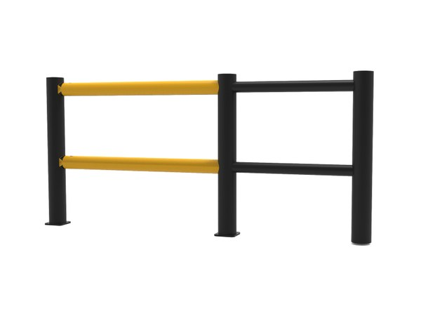
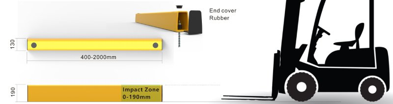

Flexes on impact. Stands back up.
Steel barriers dent when hit and have to be cut out and replaced. Polymer barriers flex to absorb the force, then return to shape.
How the barrier takes a hit
- 1A forklift hits the 3-rail pedestrian barrier
- 2The polymer rail flexes to absorb the impact
- 3The rail returns straight and the walkway stays protected
Manufacturer 3D animation. Real results depend on barrier size, speed and load.
Every hit means a repair, unless the barrier needs none.
Strong, but dents when hit
Dents and bends for good. Dented rails get cut out and replaced
Base pulls loose, concrete around the bolts cracks easily
Repaint, straighten, weld. Chipped paint rusts within months
Lower
Low traffic, light vehicles
Absorbs the force, stands back up
Flexes with the hit and returns to shape, within the impact level the barrier is designed for
Bolted to the floor, it holds the barrier in place while the rail flexes to take the hit
Per the manufacturer's guide: clean, check bolts and joints. No repainting step
Higher. Worth it where impacts are constant
Rack ends, corners, dock doors
Maintenance: per the maintenance guide in the manufacturer's catalogue. This is a qualitative comparison. We use no impact test figures until a numbered test report is available.
Choose by what needs protecting
Each series comes in several sizes. Size depends on the vehicle type and the impact level at each spot, so Thien Khoi measures on site before confirming.

3-rail pedestrian barrier

Single-rail forklift barrier

Double-rail forklift barrier

Bollard


Rack upright guard





Door frame guard
Series names and codes from the manufacturer. Product photos: manufacturer. Size specifications:
Where it goes in the warehouse
Each area needs something different. Open an area to see barriers, tape and layout together.
GSR190 car stop
For forklift and car parking bays and charging areas. Rubber end caps.

Source: GSR190 dimension drawing from the manufacturer, accessed October 28, 2026.
See what the rail does when a forklift hits it
Polymer barriers are not needed everywhere.
- Low traffic, light vehicles: keep steel barriers. Lower upfront cost
- Each barrier series handles impacts up to a set level. Heavier, faster vehicles need a larger series
- A barrier holds only when its base is anchored correctly into a floor that is thick enough. Check the floor first
 Photo: manufacturer
Photo: manufacturerPolymer barriers: choose the series, prepare the floor, maintain
Polymer barriers are used on forklift lanes, rack uprights, columns and parking areas in factories and warehouses. Catalogues say little about choosing the series by location, floor conditions for installation, the maintenance schedule and the limits, so we cover those here.
What the test videos show, and what is not documented yet
In the manufacturer's test videos, the rail and posts bend with the hit, and when the vehicle backs away they return to their original shape. The rail is a hollow, multi-chamber tube. In a warehouse, that means after a hit within the design level, there is no cutting, welding or repainting.
We do not yet have a numbered test report for the impact each size can take or how the base takes the load, so we do not state a figure. Watch the test videos to judge for yourself, and read the steel or polymer article to see where you do not need to change yet.
- Barrier size for each stretch is chosen from the vehicle type, speed and load measured on site, not one size for the whole warehouse.
Choose the series by location, not by photo
Each series comes in a few sizes. A forklift barrier where only hand pallet trucks run is very different from one where diesel forklifts carry pallets. Three facts decide the size: the load and speed of the heaviest vehicle on that route, the height of the impact point (forks, pallet or vehicle body), and the gap left between the barrier and the vehicle lane.
- Rack upright guards: the uprights of pallet racking at aisle ends, where trucks turn. A guard does not make the rack carry more load
- Column guards: measure each real column, do not take numbers from the drawing
- Bollards: stop one point such as a wall corner or an electrical panel, when there is no room for a whole stretch of barrier
- Wheel stops: at the end of a parking bay, where the driver reverses and cannot see the rear edge
- Machine guarding barriers: leave a way through for maintenance, or use a sliding gate where equipment has to pass
Preparing the floor before installation
Barrier bases are fixed to the floor with expansion bolts or chemical anchors, so the floor has to be drilled. A barrier holds only as well as its floor, so before we confirm, we check it: is the concrete cracked, is it hollow under the epoxy, does an expansion joint run through the base position, are there pipes or electrical cables under the slab.
Installation goes stretch by stretch, so the whole zone does not stop. The stretch being drilled must be fenced off, and the drivers on that shift told in advance.
- The floor is checked on site before the bases are fixed: slab thickness, concrete strength, cracks and expansion joints.
- Bollard spacing and the setback from barrier to rack are set on the survey drawing, following the real path of the vehicles.
Maintenance per the manufacturer's guide
The manufacturer's maintenance schedule has four steps, shown in the table below. There is no repainting step. Your maintenance team needs to keep to the inspection schedule and record where hits happen, because a spot that has been hit is usually hit again.
What to replace when a barrier takes a hard hit
If a rail or post is damaged, replace that part, not the whole stretch. To order the right part, we need clear photos of the impact point, the base bolts and the joint between rail and post, plus the length of the stretch. Send them through the survey request page.
If one spot is hit again and again, look at the traffic flow there: you may need to move the barrier, widen the corner or switch to a larger size.
| When | What to do | Note |
|---|---|---|
| Monthly | Wipe with a soft, dry cloth | No strong chemicals or abrasive materials. Frequency depends on the environment |
| 6 months | Check base bolts, joints and end posts | At spots that get hit, push and shake to test. Fix anything loose or damaged straight away |
| Yearly | Check expansion bolt torque with a torque wrench | M10 from 50 Nm, M12 at 80 Nm. Skip this for bases fixed with chemical anchors |
| After an impact | Check the impact point, base bolts and the joint between rail and post | Count the damaged parts and send photos to Thien Khoi |
Source: maintenance guide in the 2026 catalogue of the polymer barrier manufacturer, read through Thien Khoi's internal source file on 28/10/2026.
How are polymer barriers different from steel barriers?
A steel barrier that takes a hard hit dents, and has to be straightened, welded, repainted or cut out and replaced. A polymer barrier flexes with the hit and returns to its shape, within the level that size was designed for. Maintenance per the manufacturer's guide is cleaning and checking bolts, with no repainting step. In return, the upfront cost is higher. See the steel or polymer article.
Where should we switch to polymer and where keep steel?
Switch where hits are constant: rack ends, corners, junctions inside the warehouse, dock doors. Keep your existing steel where traffic is light, with only trolleys or hand pallet trucks. A quick way to find them: walk the site and mark steel stretches that are dented or have been repaired more than once. See the 7 zones in a warehouse.
What is the difference between single-rail and double-rail forklift barriers?
A single-rail barrier suits routes around machines and along walls where traffic is not too heavy. A double-rail barrier has an extra rail, so it guards at a higher level. It is used at rack ends, corners, heavy-traffic stretches or where the impact point could be a loaded pallet. The exact size is set when we measure on site. Try the quick selector for a first suggestion.
Can polymer rack guards replace U-shaped steel guards?
They can, at rack uprights that get clipped often, because a polymer guard does not need repainting after each hit. But any guard only reduces damage to the upright. It does not make the rack carry more load. If the upright is already dented, inspect and deal with the rack before fitting the guard. See the rack end zone or book a survey.
How far apart should bollards in a factory be?
The spacing depends on the width of the vehicle, the impact point and the bollard series chosen, so we do not give one general figure. The spacing from the manufacturer's document will be added when we have it in writing. Meanwhile, measure the width of the narrowest vehicle that runs there and send it with photos through the survey request page. See also choosing by zone.
When a barrier is hit, replace the whole stretch or only the damaged part?
Only the damaged part, per the manufacturer's maintenance guide. After an impact, check the impact point, the base bolts and the joint between rail and post. Count the damaged parts, take clear photos and send them through the survey request page so we can order the right part. If one spot keeps getting hit, review the traffic flow in that zone.
Does installing polymer barriers mean drilling the floor, and what floor works?
Yes. Barrier bases are fixed with expansion bolts or chemical anchors, so the floor must be drilled. The slab needs to be thick enough, not cracked and not hollow under the epoxy. Expansion joints, buried pipes or cables under the floor must be avoided or dealt with first. The minimum slab thickness per the manufacturer's installation guide will be confirmed at the survey. See choosing by zone.
Does installing barriers mean stopping the whole plant?
No. Barriers are installed stretch by stretch, urgent stretches first and the rest in phases. While drilling and fixing bases, we only fence off the stretch being worked on and tell the drivers on that shift to go around. If needed, we can schedule work for low-traffic hours. Discuss the schedule through the survey request page or look at the 7 zones in a warehouse first.

Three steps to a zone-by-zone recommendation for your warehouse
Start with a few phone photos. We review them, call you back, then visit your warehouse during a running shift.
- 1Send photos of the spots
Photograph the spots that get hit or get slippery. Note the estimated length and the vehicle type that runs there.
- 2Get a first suggestion
Thien Khoi reviews the photos, calls you back and suggests a barrier group or tape type for each spot.
- 3Survey on site
We visit during a running shift to measure, check the floor, then send a recommendation for each zone.
Request received
Mockup: this form does not send anywhere. On the live site, Thien Khoi calls back on the number you leave.